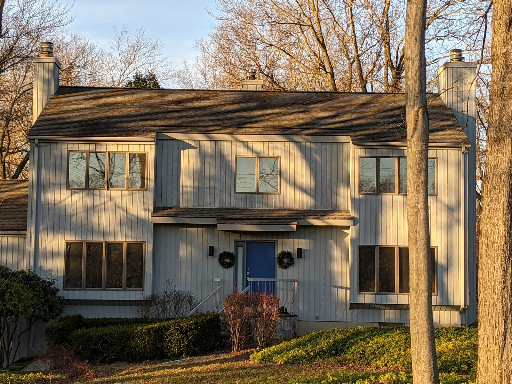
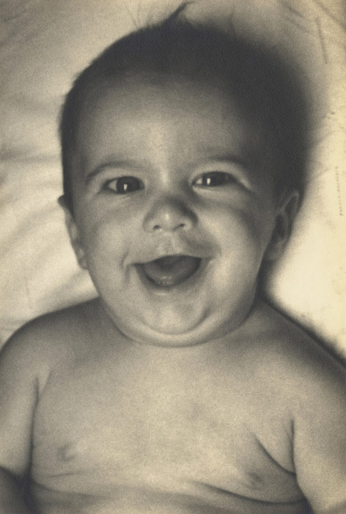
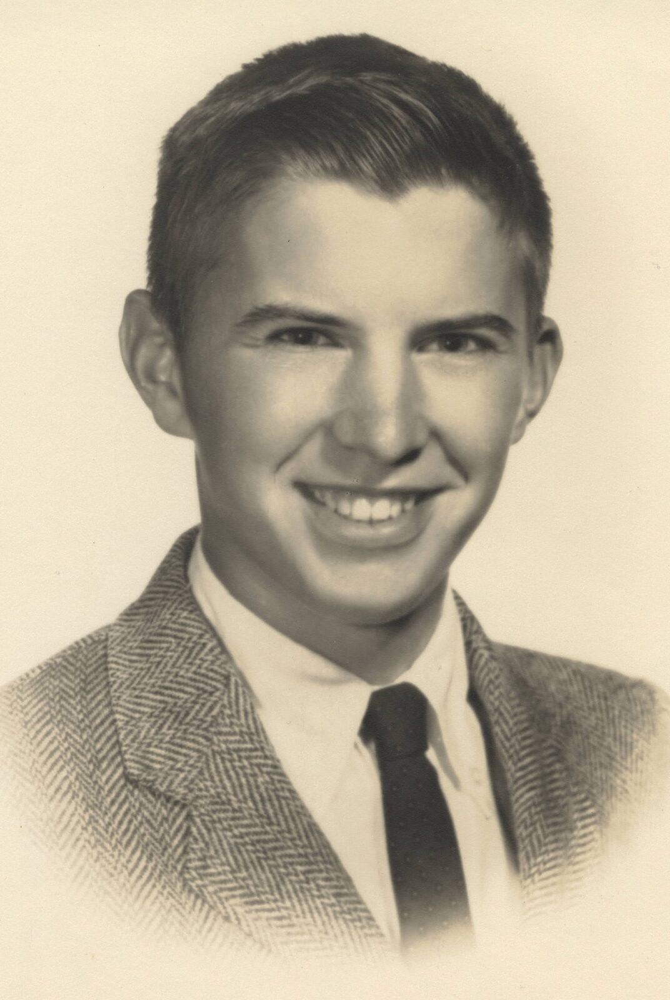
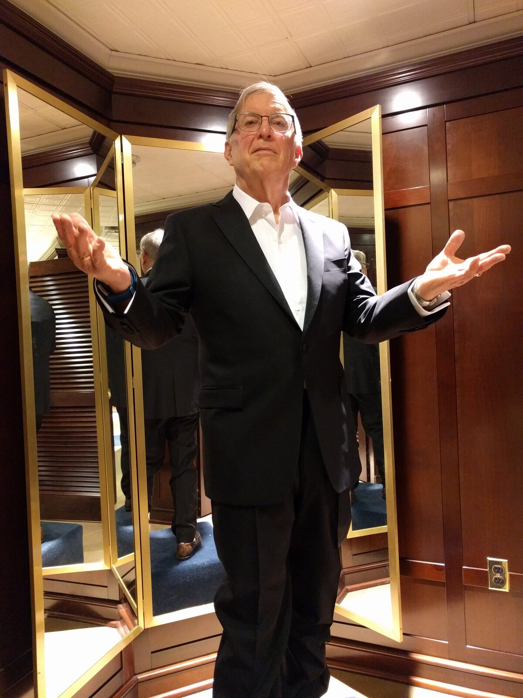

A Service of Celebration

Sunday, June 7, 2026 at 12:00 noon
75 Church Lane, Westport, CT 06880
Reception to Follow

At our home — please see your invitation for the address.
Join us to celebrate
1944 – 2025



A Service of Celebration
Sunday, June 7, 2026 at 12:00 noon
75 Church Lane, Westport, CT 06880
Reception to Follow

At our home — please see your invitation for the address.
Jim Powell was born on Long Island in 1944. His father, Frank Powell, served in the Navy during World War II and then ran a company manufacturing needles for record turnstiles (Frank would ultimately die of a heart attack when Jim was only 23). His mother Madeline (née Shields) was a homemaker.
As a boarder at Millbrook School, Jim played on the hockey team.
Later, the promotion of libertarianism and laissez-faire capitalism would come to be one of the defining efforts of Jim’s life. As a teenager, he was already interested in these ideas, and for college, was drawn west to the University of Chicago by the presence of laissez-faire economists Milton Friedman and Friedrich Hayek (as luck would have it, Jim’s assigned roommate was Friedman’s son David; the two roomed together throughout their four years at Chicago).
Graduating with a degree in history, Jim at first worked in advertising as a copywriter. Over the decades that followed, he would move steadily back towards the cause of libertarianism.
His first step was to move from advertising to magazine writing. Writing for magazines like Antiques World and Good Housekeeping, Jim covered gardens, antiques, and the art market. Later, Jim travelled across Asia writing for National Geographic.
Jim first found a way to earn his paycheck in service to the libertarian movement on the staff of Laissez Faire Books. At Laissez Faire, he turned his experience in advertising to the cause, taking charge of the libertarian bookstore’s mail-order catalog. Writing hundreds of capsule reviews of books on politics, history, economics, Jim was at the center of the libertarian intellectual community—and had a front-row seat into the world of books.
Eventually, Jim would decide to enter this world as an author himself. His first titles covered the subjects from his magazine days: antiques, finance, the art market. But here as elsewhere, he quickly returned to the subject that was most important to him. In the last ten years of his writing career, he contributed six books of libertarian history. During this time the Cato Institute, a libertarian think tank, recognized and supported Jim’s work with a fellowship.
Libertarians of Fairfield County knew Jim as a host of the Junto, a libertarian social group which rotated through congenial living rooms. Friends knew Jim for the towering chocolate soufflés he cooked each year for crowded New Year’s parties.
Jim fell in love with Marisa Manley in the 1980s, and moved in with her in the early ’90s. Their son Justin was born in 1993, and daughter Kristin two years later. Jim and Marisa were married in 2006, with Justin and Kristin as ringbearers.
Originally, Jim and Marisa each had their own home offices in separate rooms. Always eager to spend more time with Marisa, Jim moved his desk to share Marisa’s office—even though that meant occasionally donning lawnmower-grade ear protectors to stay focused while she was on phone calls. Jim loved greeting Marisa with a kiss when she came home from work. He admired that she ran her own business, and supported it however he could, writing copy for its promotional brochures and teaching himself Adobe PageMaker in order to build her company its first website.
Jim came to fatherhood later than most, and he never took it for granted. He took great joy in being a father. He clocked more than a hundred thousand miles driving Justin and Kristin to and from school, swimming lessons, piano lessons, tennis lessons, cross-country and track meets, squash games, choral concerts, school plays, playdates, and sleepovers. Jim served on the school board of Justin and Kristin’s elementary school for ten years, and when the school was struggling with traffic jams at dropoff and pickup times, he donned a fluorescent vest and headed out to the parking lot. When Justin struggled with middle-school math, history-major Jim brushed up on his algebra.
Jim was also a devoted son and son-in-law. Jim and his mother Madeline shared a love of gardening; he and his mother-in-law Rosalynd enjoyed catching up about the latest Yankees games they had heard on the radio. Later, when Madeline contracted leukemia, Jim drove her to doctor’s appointments in New York City. When Rosalynd could no longer drive, Jim pitched in to help drive her to and from her job at a local shoe store (doubtless with the car radio tuned to catch the Yankees game).
Jim was diagnosed with Lewy Body dementia in 2019. Marisa cared for Jim throughout the course of his decline, along with the help, near the end of his life, of skilled caregivers. Throughout the course of Jim’s dementia, Marisa fought to sustain for Jim the independence and agency he himself had worked so hard to promote.
Jim died peacefully at home in December 2025 at the age of 81.
Jim is survived by his wife, Marisa, and children Justin and Kristin.
We would love to have you join us to celebrate Jim’s life. Please let us know if you can make it.